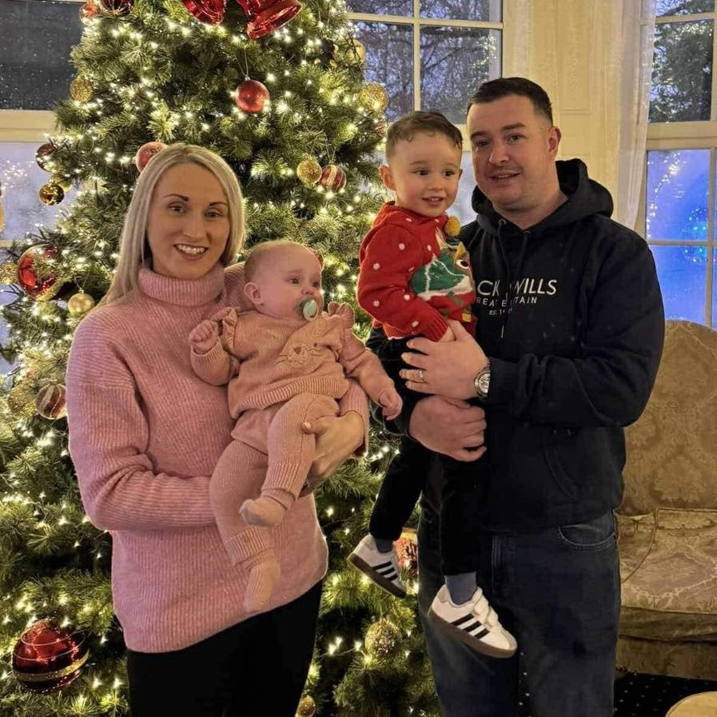

Read Yvonne's Story
There are currently few options for additional chemotherapy in Ireland, but after doing a lot of research and speaking with other cancer
patients, we have found treatments in Germany that have shown a lot of promise and potential. Some patients have experienced remission,
while others have seen a significant reduction in their disease and symptoms.
This treatment however comes at a great cost, which for us alone is far out of reach financially.
By hosting this Last Man Standing Competition, our goal is to keep Yvonne with us to see her two beautiful babies grow up so we are asking
for your help. This will be used to fund treatment, travel and cover costs of having to take time off work, of which we are already on a
reduced income.
Much love, Gavin and Yvonne ♥. Please dig deep and help keep this amazing wife, mother, and friend with us for years to come.
